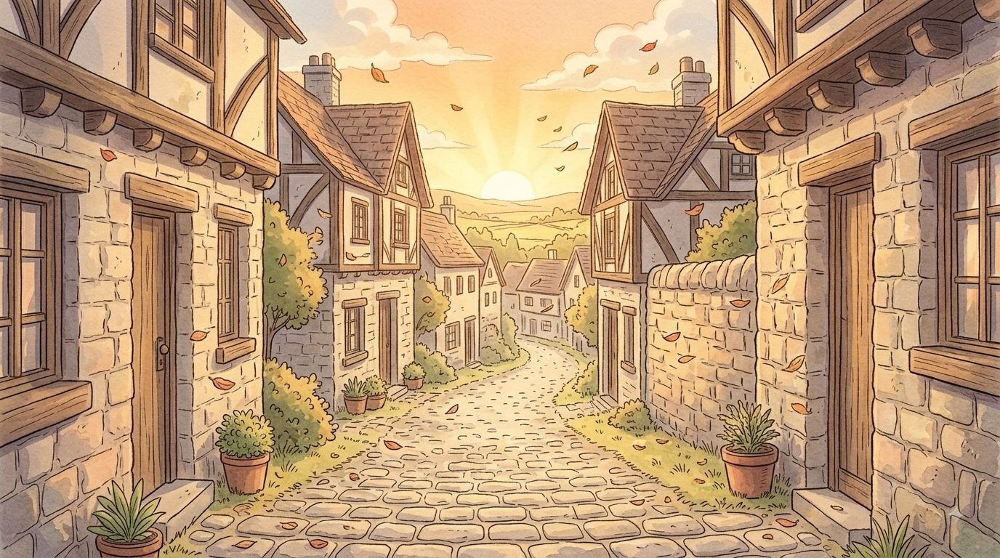
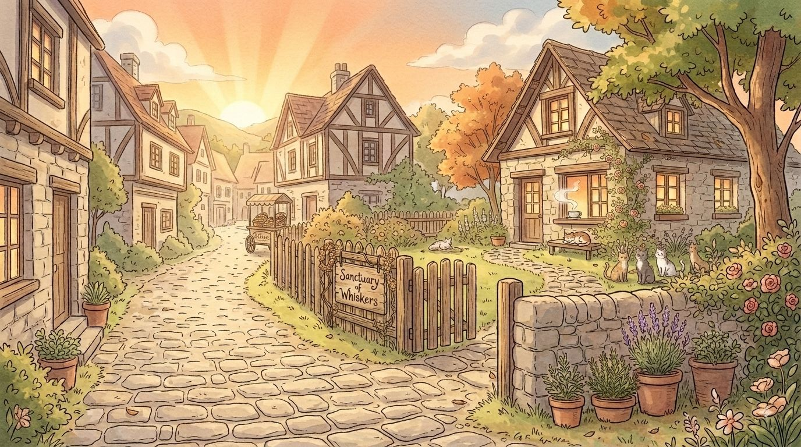
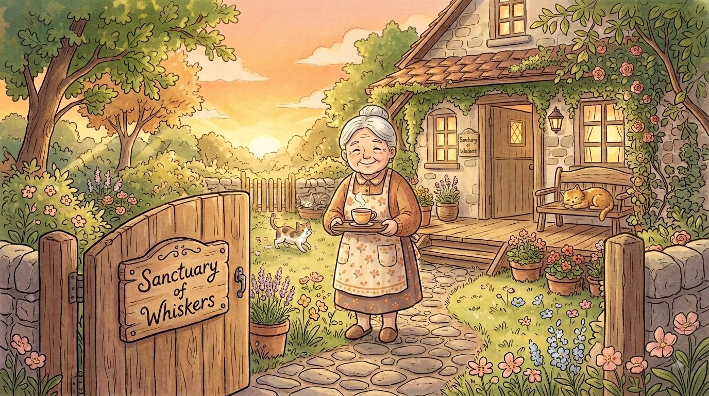
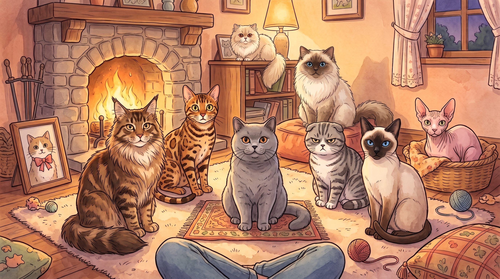
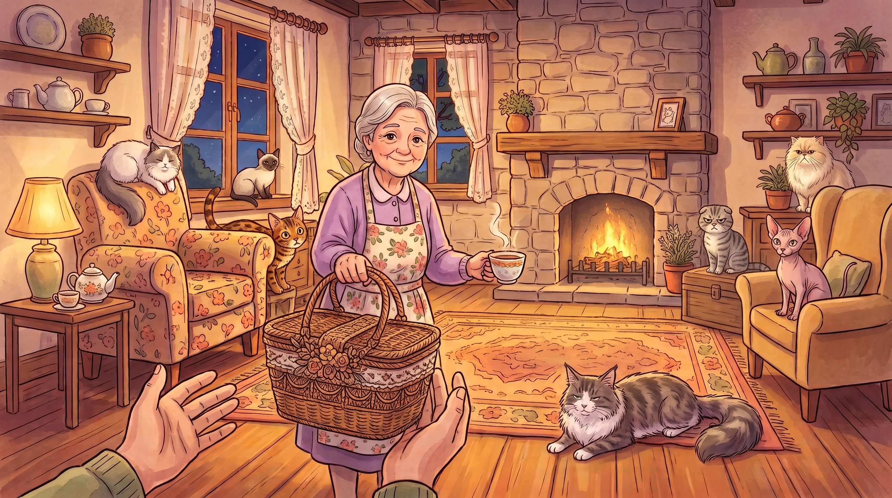

"ในเย็นวันเสาร์ที่ท้องฟ้าเรื่อสีส้มอบอุ่น..."
คุณกำลังเดินเล่นปล่อยใจไปตามซอยเล็กๆ ที่ไม่เคยเฉียดผ่านมาก่อน เสียงลมพัดใบไม้พลิ้วไหวชวนให้รู้สึกสงบ ทันใดนั้น สายตาของคุณก็ไปสะดุดเข้ากับป้ายไม้เก่าๆ หน้าบ้านสไตล์วินเทจหลังหนึ่ง เขียนด้วยลายมือบรรจงว่า "Sanctuary of Whiskers: บ้านพักใจแมวจร"

คุณก้าวเท้าผ่านประตูรั้วเข้าไป กลิ่นหอมของชาร้อนหอมกรุ่นและแสงแดดอ่อนๆ ต้อนรับคุณอย่างอ่อนโยน เจ้าของบ้านพัก คุณยายท่าทางใจดี ยิ้มให้คุณแล้วพูดขึ้นว่า
“ยินดีต้อนรับจ้ะ ที่นี่มีเด็กๆ อยู่ 8 ตัว แต่ละตัวมีเรื่องราวและความรู้สึกที่แตกต่างกันไป ลองเดินดูรอบๆ สิ... บางทีวันนี้อาจมี ‘ใครบางคน’ กำลังรอพบคุณอยู่ก็ได้นะ”
ทำความรู้จักกันก่อนออกเดินทาง 🐾

ก้าวแรกผ่านประตูบ้านพัก
คุณก้าวเท้าผ่านประตูรั้วเข้ามา กลิ่นชาร้อนลอยมาแตะจมูก คุณยายยิ้มต้อนรับอย่างอ่อนโยน สิ่งแรกที่คุณรู้สึกหรือแสดงออกคืออะไร?

ก่อนเราจะรู้ได้รู้จักน้องแมวของเรา เรามาทำแบบทดสอบกันสักหน่อย 🐾
แบบประเมินการรับรู้และความเข้าใจในตนเอง (Self-Awareness Post-test) จำนวน 20 ข้อ
ขอให้นักเรียนตอบคำถามที่ตรงกับความรู้สึกจริงมากที่สุดนะเหมี้ยว~
ข้อคำถามจะแสดงที่นี่...

บทสรุปการเดินทาง - การพบกันของหัวใจ 🐾
คุณยายยิ้มอย่างอ่อนโยนแล้วยื่นตะกร้าเดินทางใบเก่าที่ประดิดประดอยอย่างดีให้คุณ
“ดูเหมือนว่า... วันนี้ไม่ได้มีแค่หนูที่กำลังมองหาใครสักคนนะจ๊ะ แต่มีเด็กคนหนึ่งที่เลือกหนูไว้ตั้งแต่ก้าวแรกที่คุณเดินเข้ามาแล้วล่ะ”
การพบกันของหัวใจ 🐾
เมื่อคุณเปิดฝาตะกร้าออก เจ้าตัวเล็กในนั้นก็ส่งเสียง “เหมี้ยว~” เบาๆ